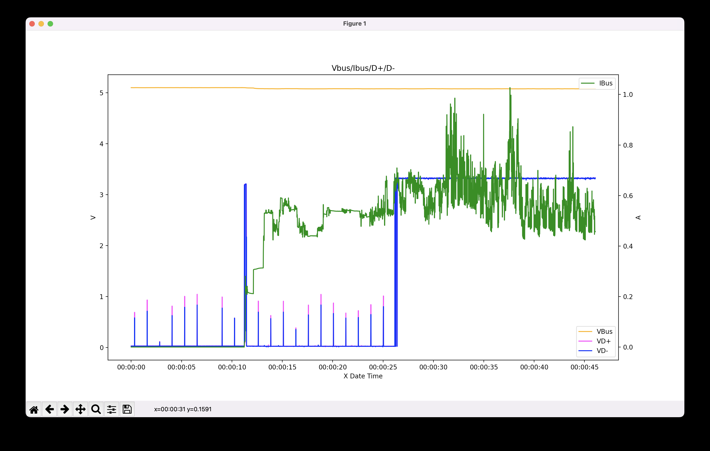

plot mutiple Y curve
绘制多Y轴PowerZ数据曲线
PowerZ

#!/usr/bin/env python3
from matplotlib import pyplot as plt
import datetime
import PluginsPy
@PluginsPy.addRun
class PowerZ:
"""
绘制PowerZ数据曲线
@input(default/powerz.csv): powerz数据
"""
def __init__(self, kwargs):
filename = kwargs["input"]
if filename != None:
dateList = []
vbusList = []
ibusList = []
vdPlusList = []
vdMinusList = []
preDateTime = None
currentDateTime = None
interval = 0
with open(filename, mode="r", encoding = "ISO-8859-1") as fd:
for line in fd:
if "temperature" not in line.strip():
if len(line.split(",")) >= 6:
if ":" in line.split(",")[0]:
currentDateTime = datetime.datetime.strptime(line.split(",")[0], "%H:%M:%S.%f")
if preDateTime == None:
dateList.append(currentDateTime)
vbusList.append(float(line.split(",")[1]))
ibusList.append(float(line.split(",")[2]))
vdPlusList.append(float(line.split(",")[4]))
vdMinusList.append(float(line.split(",")[5]))
preDateTime = currentDateTime
interval = currentDateTime - preDateTime
else:
# 软件输出的csv文件时间点在一秒的最后一个点存在取整没进位的问题
if currentDateTime > preDateTime:
dateList.append(currentDateTime)
vbusList.append(float(line.split(",")[1]))
ibusList.append(float(line.split(",")[2]))
vdPlusList.append(float(line.split(",")[4]))
vdMinusList.append(float(line.split(",")[5]))
preDateTime = currentDateTime
else:
currentDateTime = preDateTime + interval
dateList.append(currentDateTime)
vbusList.append(float(line.split(",")[1]))
ibusList.append(float(line.split(",")[2]))
vdPlusList.append(float(line.split(",")[4]))
vdMinusList.append(float(line.split(",")[5]))
print("should skip line: " + line.strip())
fig, ax1 = plt.subplots()
ax2 = ax1.twinx()
ax1.plot(dateList, vbusList, color="orange", label="VBus")
ax2.plot(dateList, ibusList, color="green", label="IBus")
ax1.plot(dateList, vdPlusList, color="fuchsia", label="VD+")
ax1.plot(dateList, vdMinusList, color="blue", label="VD-")
ax1.set_xlabel("X Date Time")
ax1.set_ylabel("V")
ax2.set_ylabel("A")
plt.title("Vbus/Ibus/D+/D-")
ax1.legend()
ax2.legend()
plt.show()
if __name__ == "__main__" :
print("main")